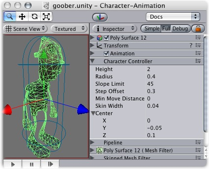

Previous
Previous
The Character Controller is mainly used for third-person or first-person player control that does not make use of rigidbody physics.

The Character Controller
Properties
| Property: | Function: |
|---|---|
| The character's capsule collider height. Changing this will scale the collider along the Y axis in both positive and negative directions. | |
| Length of the capsule collider's radius. This is essentially the width of the collider. | |
| Limits the collider to only climb slopes that are equal to or less than the indicated value. | |
| The character will step up a stair only if it is closer to the ground than the indicated value. | |
| If the character tries to move below the indicated value, it will not move at all. This can be used to reduce jitter. In most situations this value should be left at 0. | |
| Two colliders can penetrate each other as deep as their skin width. Larger skin widths reduce jitter. Low skin width can cause the character to get stuck. A good value is to make this value 10% of the radius. | |
| This will move the capsule collider in world space, and won't affect how the character pivots. |
Details
The traditional Doom first person controls are not physically realistic. The character runs 90 miles per hour, comes to halt immediately and turns on a dime. Because it is so unrealistic, use of rigidbodies and physics to create this behavior is impractical and will feel wrong. The solution is the specialized Character Controller. It is simply a capsule shaped collider which can be told to move in some direction from a script. The controller will then carry out the movement but be constrained by collisions. It will slide along walls, walk up stairs (if they are lower than Step Offset) and walk on slopes within the Slope Limit.
The Controller does not react to forces on its own and it does not automatically push rigidbodies away.
If you want to push rigidbodies or objects with the Character Controller, you can apply forces to any objects that are collided with in the OnControllerColliderHit() function through scripting.
On the other hand, if you want your player character to be affected by physics then you might be better off using a {class-Rigidbody|rigidbody} instead of the Character Controller.
Fine-tuning your character
You can modify the Height and Radius to fit your character's mesh. It is recommended to always use around 2 meters for a human-like character. You can also modify the Center of the capsule in case your pivot point is not at the center of character.
Step Offset can affect this too, make sure that this value is between 0.1 and 0.4 for a 2 meter sized human.
Slope Limit should not be too smaller. Often using a value of 90 degrees works most robust. This will not make your character be able to climb up walls due to the capsule shape.
Don't get stuck
The Skin Width is one of the most critical properties to get right when tuning your Character Controller. If your character gets stuck it is most likely because your Skin Width is too small. The Skin Width will let objects slightly penetrate the controller but it removes jitter and prevents it from getting stuck. It's good practice to keep your Skin Width at least greater than 0.01 and more than 10% of the Radius.
It is recommended to keep Min Move Distance at zero.
See the Character Controller script reference here
You can download an example project showing pre-setup animated and moving character controllers here.
Hints
- Try adjusting your Skin Width if you find your character getting stuck frequently.
- The Character Controller can affect objects using physics if you write your own scripts.
- The Character Controller can not be affected by objects through physics.